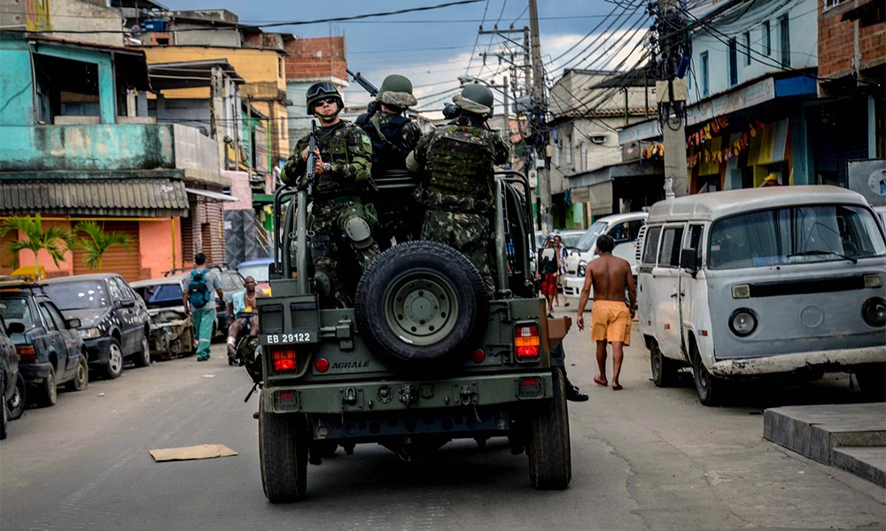
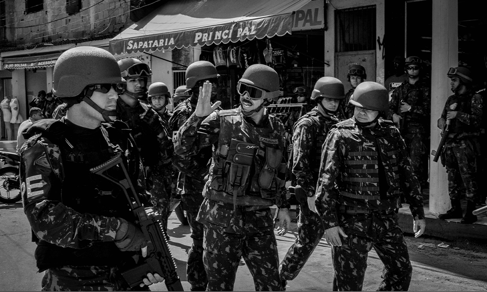

Operações da Garantia da Lei e da Ordem
A Operação de Garantia da Lei e da Ordem (GLO) é uma medida excepcional que permite ao Presidente da República utilizar as Forças Armadas para auxiliar órgãos de segurança pública em situações de grave perturbação da ordem, quando as forças policiais locais forem insuficientes. A GLO tem como objetivo a preservação da ordem pública, a integridade da população e o funcionamento das instituições. Detalhes: Autorização: A GLO é autorizada exclusivamente pelo Presidente da República, em área específica e por tempo determinado. Finalidade: Visa garantir a lei e a ordem, especialmente quando há esgotamento das forças de segurança locais ou em situações que demandam um apoio com mais capacidade operacional ou maior abrangência. Atuação: As Forças Armadas, sob comando do Presidente da República, passam a ter poderes de polícia durante a GLO, auxiliando as forças de segurança na manutenção da ordem. Aplicações: A GLO pode ser utilizada em diversas situações, como: Grande eventos (como a Copa do Mundo, as Olimpíadas, e o G20). Ações contra o crime organizado. Emergências e desastres naturais. Em áreas com alta violência. Diferença com outros mecanismos: A GLO difere da Intervenção Federal, da Força Nacional de Segurança Pública e do Estado de Defesa/Sítio, pois é uma medida de apoio e não de substituição ou alteração da Constituição. Exemplos recentes: G20 no Rio de Janeiro: Em novembro de 2024, a GLO foi decretada no Rio de Janeiro para garantir a segurança do encontro do G20. Portos e Aeroportos: Em novembro de 2023, foi decretada uma GLO em portos e aeroportos do Rio de Janeiro para combater o crime organizado. Observações: A GLO é uma medida excepcional e deve ser utilizada com cautela, respeitando os direitos humanos e garantindo a segurança da população. A GLO tem sido objeto de debates e críticas, com argumentos a favor e contra sua utilização, especialmente em relação à possibilidade de uso da força e de violação dos direitos humanos

